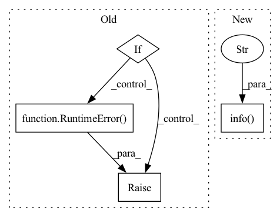

Pattern ID :29162
Before Change
stderr=subprocess.PIPE,
shell=True,
)
if exec_result.returncode != 0:
if len(exec_result.stderr) > 0:
logger.error(exec_result.stderr)
if len(exec_result.stdout) > 0:
logger.error(exec_result.stdout)
raise RuntimeError()
return exec_result.returncode
@staticmethod
def check_if_under_root_dir(strict: bool = True):After Change
@staticmethod
def execute_command(command: str, verbose: bool = True):
logger.info(f"Executing "{command}"..." )
if verbose:
exec_result = subprocess.Popen(
command,
stdin=subprocess.PIPE,In pattern: SUPERPATTERN
Frequency: 3
Non-data size: 4
Instances Fragment ID: 85844853
Project Name: wenjiedu/pypots
Commit Name: 1192e128eb9382b956589a3644abb106745805a8
Time: 2023-04-20
Author: wenjay.du@gmail.com
File Name: pypots/utils/commands/base.py
M Class Name: BaseCommand
N Class Name: BaseCommand
M Method Name: execute_command(2)
N Method Name: execute_command(2)
M Parent Class: ABC
N Parent Class: ABC
M File Name: pypots/utils/commands/base.py
N File Name: pypots/utils/commands/base.py
M Start Line: 39
M End Line: 52
N Start Line: 26
N End Line: 50
Before Change
try:
eutil_response = _get_eutil_records("efetch", id)
ERROR = _get(eutil_response, ["eFetchResult", "ERROR"])
if ERROR:
raise RuntimeError( ERROR)
pubmedEfetchReponse = PubmedEfetchResponse(**eutil_response)
pubmedArticle = pubmedEfetchReponse.PubmedArticleSet.PubmedArticle
except Exception as e:
print(f"Error encountered in uids_to_docs {e}")After Change
start_time = time.time()
eutil_response = _get_eutil_records("efetch", id, rettype="medline", retmode="text")
duration = time.time() - start_time
logging.info(
f"Retrieved docs {lower} through {upper - 1} of {num_uids - 1} in {duration}s"
)
except Exception as e:
logging.warn(f"Error encountered in uids_to_docs: {e}")
logging.warn(f"Bypassing docs {lower} through {upper - 1} of {num_uids - 1}")
continue Fragment ID: 85844852
Project Name: pathwaycommons/semantic-search
Commit Name: 286b58fa7bd3c31c5323f6e8186c9a849b3a01d0
Time: 2021-03-12
Author: anweshianavadya@gmail.com
File Name: semantic_search/ncbi.py
M Class Name: AnonimousClass
N Class Name: AnonimousClass
M Method Name: uids_to_docs(1)
N Method Name: uids_to_docs(1)
M Parent Class:
N Parent Class:
M File Name: semantic_search/ncbi.py
N File Name: semantic_search/ncbi.py
M Start Line: 209
M End Line: 230
N Start Line: 121
N End Line: 132
Before Change
if not config.model_uri:
// an MLflow model was not found in the current run, so we simply reuse
// the service created during the previous step run
if not existing_services:
raise RuntimeError(
f"An MLflow model with name `{config.model_name}` was not "
f"trained in the current pipeline run and no previous "
f"service was found."
)
return service
if not deploy_decision:
logger.info(After Change
// return an inactive service just because we have to return
// something
return service
logger.info(
f"An MLflow model with name `{config.model_name}` was not "
f"trained in the current pipeline run. Reusing the existing "
f"MLflow model server."
)
if not service.is_running:
service.start(config.timeout)
// return the existing service Fragment ID: 85844851
Project Name: maiot-io/zenml
Commit Name: 2bbc792044e1d159c5353e442759377f7dd64b08
Time: 2022-05-05
Author: stefan@zenml.io
File Name: src/zenml/integrations/mlflow/steps/mlflow_deployer.py
M Class Name: AnonimousClass
N Class Name: AnonimousClass
M Method Name: mlflow_model_deployer_step(3)
N Method Name: mlflow_model_deployer_step(3)
M Parent Class:
N Parent Class:
M File Name: src/zenml/integrations/mlflow/steps/mlflow_deployer.py
N File Name: src/zenml/integrations/mlflow/steps/mlflow_deployer.py
M Start Line: 89
M End Line: 156
N Start Line: 90
N End Line: 177